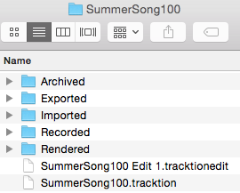
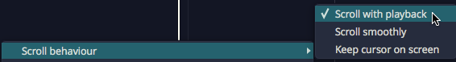

Basic Navigation¶
This chapter is an overview of how to operate Waveform. You will also learn how to set up Waveform for an efficient workflow, as well as how to change the tempo of your song.
Tabs and Menus¶
With Waveform open, you can see the Projects tab and the Settings tab. Click on the tab name or icon to switch to that tab.

Projects Tab & Settings Tab
Waveform's menus are in the standard menu bar at the top of the window (the macOS menu bar on Mac, or the menu bar along the top of the window on Windows and Linux). The available menus change depending on whether you are on the Projects tab or an Edit tab.

Menus in the Projects Tab

Menus in the Edit Tab
Window Layout¶
When working on a song, the main areas of the Edit window are:
- The menu bar along the top of the window.
- The Browser down the side, which also hosts the Actions panel.
- The arrangement (and the optional Mixer) in the centre.
- The transport bar along the bottom, with the playback controls, cursor position, tempo, and the master controls.
The Actions panel shows the settings and actions for whatever you have selected -- a clip, track, plugin, automation point, and so on. It is a context-sensitive list and is central to working in Waveform, so you will see it referred to throughout this guide.
Pop-up Help¶

Example of a Pop-up Help Message
Pop-up help is helpful for the first few minutes, but you may not wish to use it after you are more familiar with the program. If you are using the default Waveform key-mappings, you can see available pop-up help by pointing at an item on screen and pressing F1.

Disabling Pop-up Help
Disable pop-up help from the Menu section using Help > Pop-up help. De-select Enable pop-up help.
Roll-over Help¶
In addition to pop-up help, Waveform also offers roll-over help. Rollover help messages appear in the upper right for controls and objects. The messages appear automatically as you roll over items on the screen.

Example of Rollover Help
💡 Tip: If you find any help messages wrong or unclear, please a message and screenshot to support@tracktion.com
Creating a Project¶
The very first step to produce a song in Waveform is to create a project. To do so:

The New Project button on the Projects tab
- Go to the Projects tab
- Click New Project and the New Project dialog box appears
- Fill in the Name
- Select the Location
- Click Create Project

The New Project Dialog Box
Click Create Project it will open to the Edit where you can compose, record, and mix. Click back to the Project tab and you will see the contents of the project in a list to the right with the title All items in project: projectname.
For now, the most important entry in the "All Items" list follows the word "edit"; that file is called an Edit. In our example, the Edit name is "SummerSong100 Edit 1."

All Items List
📝 Note: Creating a project creates a folder, that in turn contains sub-folders that contain the project media, a Project file (
.Waveform) and an Edit file (songname.tractionedit). The folder, Project, and Edit all use the name you provided in the New Project dialog box.

Project Folder on Disk
Opening the Edit¶
An Edit is the workspace in Waveform where you record, edit, and mix your songs. Double-click the Edit in the All Items list; and it opens to a new tab. This type of tab carries the name of the Edit and is called an 'Edit tab.'
Edits and Revision Control: In Waveform you can have as many Edits per Project as you want. This gives you a great system for revision control. At key milestones in your workflow, go back to the Project tab click Create a Copy. This copies the Edit to a new file. Rename the copy appropriately and resume work using the new Edit. You can return to the previous state of the Project at any point by opening an earlier Edit. Important note: all Edits within a project use the same underlying source files. Creating a copy of the Edit does not in anyway make new copies of the underlying files.
The Edit Tab¶
The Edit tab is where most of the action occurs while working in Waveform. What other DAWs call a "project" or "song", Waveform calls an Edit. In a way, this is similar to the terminology used in many video editing programs. You have a collection of media that you organize into an Edit. In concept, you can organize the same media into other Edits. In music production, having multiple edits gives you revision control and flexibility to have multiple mixes all contained within the project.
Basic Navigation¶
What you need to know to navigate an Edit:
Start and Stop Playback - The obvious way to play and stop is to use the Play/Stop button located on the transport bar. Alternatively, press the Spacebar to toggle between start and stop.

Return to Start on Stop
💡 Tip: By default, the cursor will jump back to the start position when you stop playback. If you would like the cursor to instead remain at the stop position, there is a setting for that in the menu Options Return to start on stop. Disable that and the cursor will pause at the point you hit stop. The same setting is also available when you right-click the Timeline.
Zooming In and Out¶
Here are some basic ways to control zooming:
- Use the Up and Down keys to zoom in and out
- Use the zoom controls in the lower right corner
- On the timeline just above the cursor, grab and drag up or down
💡 Tip: There are a full set of zoom actions that can be assigned to keyboard shortcuts. These are also available from the Zoom menu by right-clicking the Timeline.

Zoom Actions on Timeline Context Menu
You can also use the quick zoom tool:
- Hold Cmd + Opt / Ctrl + Alt and drag to draw an area. The pointer changes to a magnifying glass. When you release, the view zooms in to your selection.
- To step back from that zoom level, once again hold Cmd + Opt / Ctrl + Alt and click in the arrangement.
- Waveform remembers the zoom levels, so you can zoom in repeatedly. Then, press Cmd + Opt / Ctrl + Alt click to zoom back out.
Positioning the Cursor¶
The cursor position is used as the playback start time, and is also used to reference many of Waveform's editing functions. In other DAWs it is called a playhead, now time, or playback cursor. In Waveform it's simply the 'cursor.'
There are numerous ways to position the cursor, including:
- On the timeline just above the cursor, grab and drag it left or right
- Click the timeline and the cursor will jump to that spot
- Click in the background of the track area
- Click within the body of clips
- Use the left and right arrow keys to move the cursor backward and forward
📝 Note: If you don't want the cursor to be positioned when clicking on the background or the body of clips, de-select the option "Clicking the background locates the cursor" in Settings > General > Editing

Drag to Position Cursor Setting
💡 Tip: You can change the way clicking on the Timeline works by selecting Options > Timeline drag action > Drag to position transport. With this set, when you click in the timeline, the cursor jumps to that position. If you drag in the timeline, the cursor follows as well.
📝 Note: In this mode, to drag zoom, you need to hold down Opt / Alt. Since you can still zoom in and out with the mouse wheel or the up and down arrow keys, this mode is a great way to get around in Waveform.
Changing the Tempo¶
Tempo in Waveform is managed using the Tempo track at the top of the screen. You can hide or show the Tempo track using the Eye panel selector at the upper right F9.

Show or Hide the Tempo Track with the Eye Panel Selector F9
The Tempo is represented as a line in the Tempo track. This line is called the "Tempo Curve." For a fixed tempo tune it will appear as a line set to a beats-per-minute (BPM) value.

Fixed BPM Tempo Curve
For tunes with tempo changes it might appear with step ups or step downs in tempo, or even gradual tempo changes represented as curves (thus the name Tempo Curve). In other software this is often called a "tempo map."

Varying BPM Tempo Curve
To change the tempo of your Edit:

Changing Tempo: A, Click BPM Readout. B, Adjust BPM property.
- Click the tempo BPM readout in the transport bar. The Actions panel will show the tempo properties
- Adjust the BPM parameter to the desired tempo. Either click and type it in, or drag the slider.
- Alternatively, open the tempo track and drag the tempo curve line up and down.
📝 Note: Setting the tempo this way changes the tempo only for the segment of the tempo curve that is under the current cursor position.
Video Clip: To learn how to use the tempo track to map tempo changes to an existing recording, Check out my video on Creating a Tempo Map
Changing Tempo at a Specific Bar¶
To change the tempo at a specific bar, use the action Insert tempo change at cursor (Opt + T / Alt + T). Here are the steps:

Right-click Timeline: Insert tempo change at cursor**
- Position the cursor where you want the tempo change to occur
- Right-click on the timeline, and select Insert tempo change at cursor
- In the Actions panel, adjust the BPM parameter to the new tempo.
- To see the results of the tempo change, open the tempo track to see the step up or down on the Tempo Curve
📝 Note: The Tempo Curve can also be adjusted with more detail in the Tempo track in much the same way as automation. Click to add points (nodes) to the curve and drag them to shape your tempo changes along with an adjustable Curvature. To shape the transition between two points, drag the small handle on the midpoint of the segment between them: dragging it bends the line from concave, through linear, to convex.
📝 Note: New points snap to the nearest beat, and the BPM is limited to the range 20–300. The very first point (at the start of the Edit) is locked — it can't be moved or deleted.
Tap Tempo: Select a single tempo point and the properties show a Tap Tempo control reading "Click here to tap out a tempo!". Click it in time with the beat, then press Apply to set that point to the tempo you tapped.
Removing Tempo Changes - Click on any tempo point, to select it. In the properties, click Delete > Delete this tempo setting.
Removing all Tempo Changes - Click on the Tempo curve line. In the properties, click Delete points from curve > Delete all points from the curve. The same Delete menu can also delete only the points within the marked region, with an option to close the gap left behind.
Offsetting and Scaling the Tempo Curve¶

Displace Curve and Scale Curve Controls
Displace Tempo Curve
- Click anywhere on the Tempo Curve. In the properties, drag left or right
over Displace Curve to move the entire tempo curve up or down.
Scale Curve - Select the Tempo Curve, then drag left or right over Scale Curve to reduce or emphasize the amount of tempo variation across the entire Edit.
📝 Note: By default Displace and Scale affect the whole curve. Turn on Only Displace/Scale the Marked Region to limit them to the loop / in-out range instead.
Copying and Pasting Tempo Curves - With a region marked, Copy the marked section of the curve to the clipboard, then Paste it back in at the cursor position. The paste menu also offers Paste curves in to fit between in/out markers, which stretches the pasted curve to fill the marked range.
Scroll Behaviour¶
Scroll behaviour options are found on the Options menu under the Scroll Behaviour submenu.

Options > Scroll Behaviour
The Scroll Behaviour menu features the default option Scroll with playback. Here is a rundown of what each option does:
Scroll with playback (default) - During playback the cursor stays on screen. As the cursor goes past the right edge, the tracks page over keeping the cursor in view.
Scroll smoothly - During playback, when the cursor arrives at a fixed position near the center of the screen, the tracks scroll under the cursor. This is a matter of personal preference.
Keep cursor on screen - During playback the cursor will stay on the screen. Even while editing or manually panning, the cursor always stays on screen. As you pan over right the cursor stays at the left edge of the screen.
No options selected - During playback the cursor will move past the right edge of the screen and then move out of sight.
💡 Tip: For most users we suggest leaving Scroll with playback enabled and the other two options off.
Moving On¶
This chapter was a basic introduction to the operation of Waveform. You can now operate the transport; you can open the demo files; you can create a new blank project; and you can adjust the playback volume and tempo.
That is enough to start exploring Waveform. Stay tuned, there is a lot more to come!